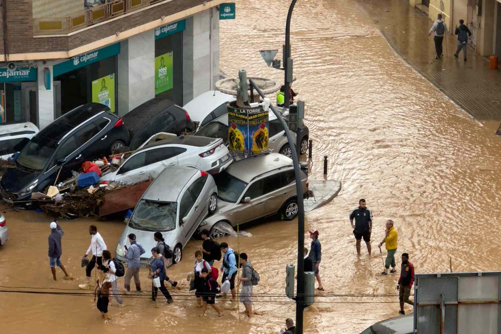
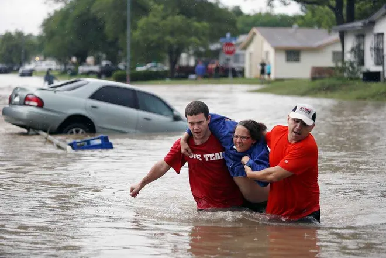

Climate change has had a huge impact on America's water cycle. It is
causing more rainfall which then leads to more flood risks. As
temperature continue to increase so does the rain because warmer weather
means more moisture in the air. Studies show that as the climate has
warmed, the amount of rainfall have become greater in many regions
across America.
Sea Level Rising
Over the past few decades the seas level has been in an upward trend.
The main cause of this is because of the melting ice glaciers and rising
temperatures. Because glaciers are melting more and more, water is
entering the ocean and will continue to rise as global temperature
continue to increase.
Flash floods
The main causes of flash floods are the extreme amount of continuous
rainfall. The rainfall then fills up nearby lakes and rivers that start
to overflow into homes or cities. This causes lots of damage to building
and residents are forced to leave without a place to go. The places who
get the most rain are usually costal states becaue of all the rain that
gets collected from the ocean.
Around the world

This problem is not happening in just America, it is also affecting many
places around the world. Recently, Spain was hit by a huge flood that
took over a hundred lives and caused lots of damages to the town. Like
many flash floods the cause of this one was due to climate change. The
increased moistness in the air caused for huge amounts of rainfall.
Relief and Support

In these difficult times of people losing family members or their homes,
it is always good to be helpful. Many communities who are hit with flash
floods word together to try to save their neighbors in difficult times.
It is always helpful to volunteer to help struggling communities when
you have the time. It takes a while for organizations to help out and
provide relief for all the damages caused, so it is good to look towards
the people around you for help.
Something needs to be done
Climate change is a big problem that needs to always be adressed because
of the amount of harm it causes. A major way to reduce climate change is
to reduce your carbon footprint. Decrease the amount of greenhouses
gases you use because this is the major contributer towards climate
change. Instead you could use renewable energy sources like solar power
or wind power to fuel things. Every person who reduces their carbon
footprint helps decreases the rising temperature of global warming.